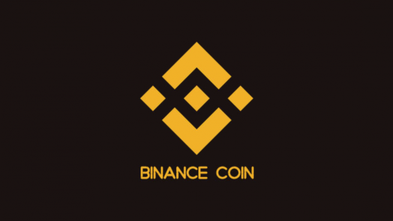
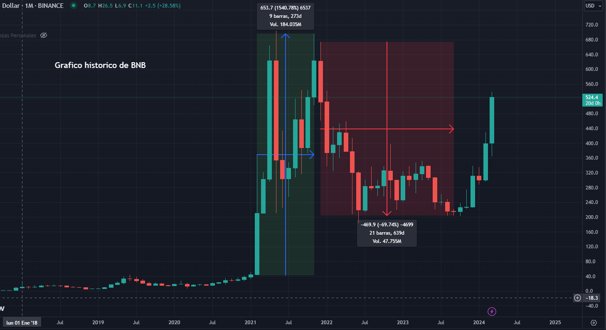

BINANCE COIN
Binance Coin (BNB) es la criptomoneda nativa de Binance, una de las mayores plataformas de intercambio de criptomonedas del mundo. Lanzada en 2017 como parte del ecosistema Binance, BNB inicialmente se utilizaba para pagar tarifas de transacción con descuento en la plataforma. Sin embargo, su utilidad se ha expandido significativamente desde entonces. Ahora, BNB se utiliza para una variedad de propósitos dentro del ecosistema Binance, incluyendo participación en ICOs, pagos en comercios que aceptan criptomonedas, y como base para tokens en la blockchain de Binance. Además, Binance ha lanzado Binance Smart Chain, una cadena de bloques paralela compatible con Ethereum, lo que ha ampliado aún más la utilidad de BNB. Con un equipo sólido detrás y una variedad de casos de uso en constante expansión, Binance Coin continúa desempeñando un papel fundamental en el crecimiento y la innovación dentro del mundo de las criptomonedas.
